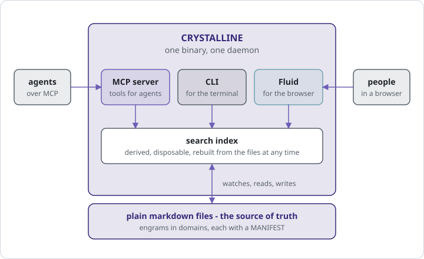
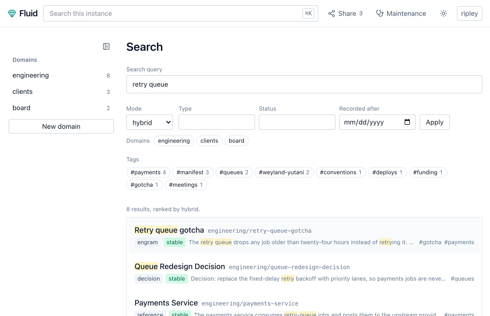
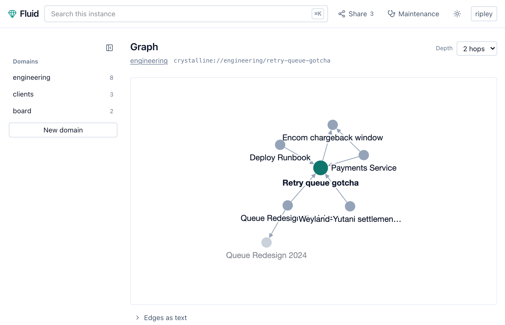
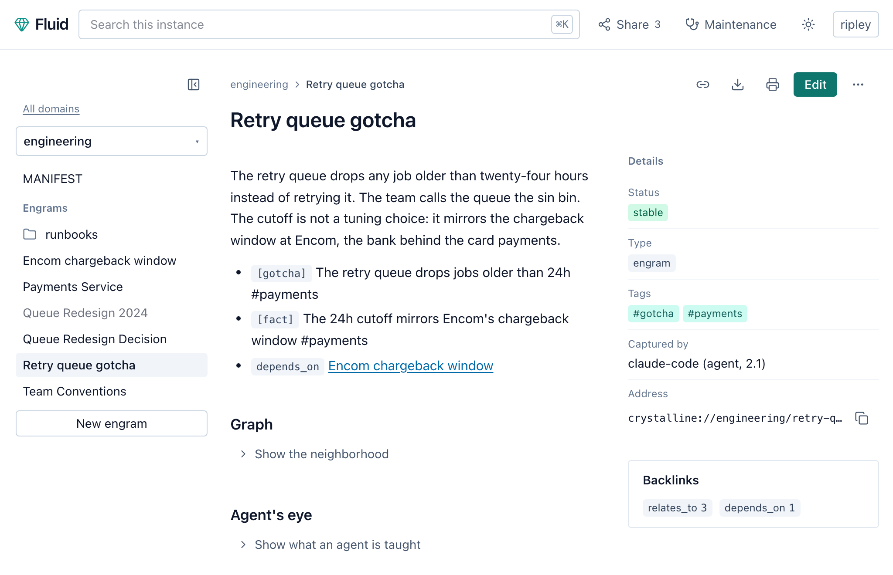

4 What Crystalline provides
Picture a workshop with two doors and a hatch. Through one door come the agents; that door is a protocol, and whoever arrives through it is handed tools. Through the other come people; that door is a browser tab. The hatch at the side is for anyone with a terminal open, which is where the command line lives. Behind all three is one room with one set of shelves, and on the shelves are plain files. The room has a single keeper, a daemon, that watches the shelves, keeps the index warm and answers whoever comes in, whichever way they came. That is the whole architecture, and the rest of this chapter walks the room surface by surface: the command line, the tools an agent sees, search, the graph, time, Fluid, the skills and the sweep. Chapter 1 promised the names. This chapter says what each one lets a colleague do.
The room is also, for most of its life, invisible. Once it is set up, the agent comes in through its own door at the start of every session and you come in through the browser when you feel like it. The keeper starts itself when the first visitor arrives, and the hatch stays shut. The command line below is for the install, for standing up a shared instance and for the occasional maintenance run. If the list of commands looks long, read it as a tour of what is there rather than a list of what you will type.

4.1 The command line
Crystalline ships as one binary, and the binary is the product: no server package beside it, no database to install first, no UI to deploy separately. crystalline install claude-code wires a harness in one step (Codex and Copilot take the same command with their own names). It registers the MCP server, writes the session-start hook that delivers the routing prompt, writes the stop hook that nudges capture and copies the skills into place. Run it twice and the second run writes nothing and says so. crystalline uninstall reverses it and leaves anything that is not Crystalline’s own untouched.
Domains are managed the same way. crystalline domain init scaffolds a folder with a starter MANIFEST.md, crystalline domain add registers it, and domain add --virtual registers a domain that lives in the database with no folder at all, for a container without a writable volume or a knowledge base you would rather not mirror to disk. crystalline users manages the accounts that may sign in to the web UI, although the first admin is normally created in the browser. crystalline prompt system renders the routing briefing to stdout, ready for any harness with a session-start hook, and prompt connector prints the standing instruction for a chat client that has no hooks. crystalline serve runs the daemon in the foreground and serve --daemon in the background, though most people never type either, because the first agent that connects starts the daemon on its own.
The rest of the CLI mirrors what an agent can do, for scripting and for the quick fix that does not deserve a session: write, read, edit, search, context, vocabulary, evolve. Three commands ask three different questions about health. verify asks whether the format holds, statically, with no daemon involved, and it is what the bundled GitHub Action runs on every proposal a team reviews. doctor asks whether the machinery around the format is healthy and repairs what it safely can with --fix. evolve asks whether the knowledge itself is still true and still well organized, which neither of the others can. A fourth, import, brings an existing markdown-plus-frontmatter knowledge base under Crystalline as a pure file transformation, dry run first.
Exactly one process ever holds the index open. The first crystalline mcp or crystalline serve takes an advisory lock and becomes the daemon; every later agent, terminal or CLI command attaches to it over a local socket. The daemon watches the domain folders, embeds new engrams in the background and keeps running after the last agent disconnects, so the index is warm for the next session; it stops only when told to, with crystalline ctl shutdown. What it keeps is derived and disposable: crystalline reindex --full rebuilds the index from the files at any time, so a corrupted index or a schema change is never a data-loss event. The accounts for the web UI live in their own small database beside the index, never inside it, so a rebuild cannot take them along.
4.2 The tools an agent sees
An agent meets Crystalline as a set of tools over MCP, and they are best described by what they let a colleague do, because that is how the agent chooses among them. Eighteen are listed on a default writable instance; five more appear when team collaboration is turned on, and a read-only instance lists fewer.
The core is small. search_engrams is recall: search before writing, search to remember, across every domain or a chosen few. read_engram fetches the whole engram, because a search hit is a snippet and a colleague who answers from a snippet is guessing. write_engram captures something new, and it always names its domain; there is no default, so nothing lands in the wrong place. edit_engram refines what exists instead of forking a second engram about the same topic: append a section, replace one, find and replace a phrase or assign one lifecycle field by name, which is how an engram is retired or re-verified with no text matching involved. build_context walks out from an address and assembles the neighbourhood. vocabulary lists the tags, categories, relation types and statuses already in use, so an agent reuses a term rather than coining a near-duplicate. evolve_engrams runs the maintenance sweep. configure is the settings page, and add_domain gives an agent somewhere to write on an instance that has nowhere yet.
Around them sit the tools for orientation: list_domains, which re-fetches the session briefing mid-session; browse_domain, one level of the folder tree at a time; move_engram and delete_engram, with delete reserved for mistakes; recent_activity to catch up on a week; and skills to read a playbook. A domain that wants its engrams to share a shape gets validate_engrams and infer_schema, and one that ships tools of its own gets provision. The five collaboration tools share, update, check standing, settle a conflict and withdraw a proposal, and chapter 13 is theirs.
The difference between this and a lookup service is the difference between a colleague with a badge and a visitor with a lanyard. The tools let an agent act: find what applies, read it in full, do the work and leave behind what it learned, with nobody relaying anything.
4.3 Search
The most used surface is the one nobody notices, and it blends two signals. Full-text matching finds the exact phrase, the way you find your own notes when you remember the wording. Semantic similarity finds the engram about dropped queue jobs when the question was about payments going missing, because the two are about the same thing in different words. Crystalline runs both and ranks by the blend. The local embedding model is fetched once, on first use or ahead of time with crystalline model download; until then, search falls back to plain text.
Search also decides the size of a session. An agent that keeps its knowledge as a folder of markdown files reads the folder, and reads it again next session, every file whether or not the task touches it, because a folder has no way of saying which page matters today. An agent working from a knowledge base receives only the knowledge that applies: routed to a domain first, then narrowed by the indexes, full text and semantic similarity for the phrase and the meaning, the graph of relations and backlinks for what the answer leans on, tags, the folder prefixes build_context globs and the temporal filters for what holds now. Reading a folder costs the whole folder, every session. Recall costs the engrams that matter, and nothing else is loaded. Chapter 11 makes a section of it.
Two priors tilt the ranking, both small and both bounded. A salience on an engram lifts it above equally relevant neighbours without ever excluding anything, for the rare piece of knowledge that outranks its surroundings. A retired status fades an engram softly, so current knowledge surfaces first and the superseded decision from March sits one scroll further down, still there. Searches also filter: by domain, type, tag, status, any frontmatter key or a recorded-after date, and a search with no query text at all is a legitimate way to ask for everything of one kind. Fluid puts the same ranking behind a faceted page (Figure 4.2).

4.4 The graph
Every relation in an engram’s body, - depends_on [[Encom chargeback window]], is an edge, and the target’s page shows it back as a backlink, so knowledge points both ways without anyone writing the return trip. A [[Title]] in prose counts too. Links resolve within the domain by title, and across domains with a prefix, [[engineering:Retry queue gotcha]]; move an engram to another domain and the links pointing at it are rewritten, so nothing dangles.
build_context is what makes the edges useful before a task. Hand it an address and it follows the relations and links outward, one to three hops, across domains if the edges cross, and returns the neighbours ranked by how strongly each connects to the anchor, with salience counted and retired statuses ranked lower. A folder prefix with a /* suffix anchors a whole topic at once. The agent starts the task holding a neighbourhood rather than a flat list of hits, which is what an experienced colleague does when they pull up the runbook, the decision behind it and the incident that prompted the decision before touching anything. Fluid draws the same neighbourhood as an interactive graph (Figure 4.3).

4.5 Time
Every engram records when it was captured and who wrote it, and may carry the dates that bound it. valid_from and valid_to are plain dates, and the rule that makes them usable is the one worth memorizing: an absent valid_from means always valid, an absent valid_to means valid forever, and a far-future date written to mean forever is dropped at write time because absence already says it. stale_after asks for a re-check by a date; verified records that the check happened and who did it; source_date says when the underlying source was written. A retired engram closes its window with the real transition date, which is what lets a search filtered on those fields answer what applied last June with the engram that was true then. Chapter 11 puts the dated questions to work and chapter 12 the retirements.
4.6 Fluid
The door for people opens at http://localhost:7411, on by default on the same daemon the agents use, and the first visit to a fresh instance creates the admin account in the browser. An engram is a page (Figure 4.4): the frontmatter as a rail of details, observations and relations as labelled chips, backlinks, the crystalline:// address one click from the clipboard, and an agent’s-eye view showing exactly what the tools serve an agent for that page. Domains sit down the side, and Cmd+K jumps anywhere by name.

Editing happens in place, in a live-preview editor with a frontmatter form and wikilink completion across every domain, and the file on disk stays the source of truth. Attachments go onto an engram by paste, drag or upload: a screenshot, a slide deck, a PDF, a data file. They are how a person hands over teaching material, and they are not opaque: an agent reads them back over MCP and the sweep notices when a fresh file still needs capturing. Two people in the same engram see each other’s cursors, and their edits merge conflict-free into one save. Who may sign in, and how, is chapter 7’s.
4.7 Skills
A tool tells an agent what it can call. A skill tells it when, and how to do it well. Crystalline ships four harness-agnostic skills as plain folders with a SKILL.md each: routing, which domain to search and when to sweep them all; capture, what is worth writing down and the search-before-write, edit-over-create discipline; schema, for a domain that wants structure; and collaboration, for a domain with a team behind it. A fifth, consolidated skill folds the essentials into one file for Claude Desktop and any harness that installs one skill at a time.
crystalline install copies the skills into the harness’s own skills folder and keeps them current across upgrades. The same five are served over MCP as well, through the skills tool and as resources, so a remote client that never ran the CLI can read the playbook before its kind of task. Loading one is the nearest thing an agent gets to “I know kung fu”. The gap between an agent that has the tools and an agent that runs the capture loop is that folder.
4.8 Evolve
The last surface is the sweep, and it is a linter for what you know. crystalline evolve from a terminal, evolve_engrams from an agent and the maintenance page in Fluid all show the same ranked queue of temporal debt, structural gaps and redundancy. Each finding names the engram, the evidence and the one action that clears it, marked mechanical or judgment so the agent knows whether to act or to ask. It reads dates, links and graph shape, never meaning, and it changes nothing itself. It also surfaces what a person captured directly in Fluid and nobody has reviewed, and an attachment nothing references. Chapter 3 walked the loop it serves; chapter 12 works a queue end to end.
Three weeks in, Deckard is handed the Encom chargeback agreement, forty pages of it. He does not read it aloud to anyone. He opens the retry-queue engram in Fluid, drags the PDF onto it and adds one observation of his own: the bank’s window is three days, which leaves the queue two to notice a job before the cutoff eats it. He closes the tab. On Friday Ripley asks the agent for a sweep, and the queue has two findings against that engram: an unreviewed human capture, which the agent verifies, tags to match the vocabulary and wires into the graph, and a fresh attachment whose knowledge has not been extracted yet. The agent reads the PDF over MCP, proposes one further observation with the page it came from, and Ripley says yes.
The following Tuesday she is on call and types crystalline search "why do payments go missing" into a terminal. The engram comes back first, from a question the engram never poses. She opens the graph view and sees the chargeback window, the payments service and the deploy runbook one hop away, and the PDF hanging off the engram where Deckard left it. Two doors and a hatch, one room: Deckard used the browser, the agent used the tools, she used the terminal, and none of the three had to tell the others what they had done.
Eight surfaces, one room, two doors and a hatch. Everything after this chapter is one of them, used on purpose.
Crystalline is one binary with two doors and a hatch: agents come in over MCP, people through Fluid and the terminal through the CLI, and behind all three is one daemon over one set of plain markdown files. The CLI installs harnesses, manages domains, users and the routing prompt, and mirrors every tool for scripting; the MCP surface is, on a default instance, eighteen tools that let an agent search, read, write, edit, walk the graph, check the vocabulary and run the sweep. Search blends full text with semantic similarity and tilts gently for salience and against retired status; the graph turns relations into backlinks and neighbourhoods; the temporal fields make absence mean unbounded. Skills teach a harness when to use all of that, and evolve is the read-only linter that keeps it true.